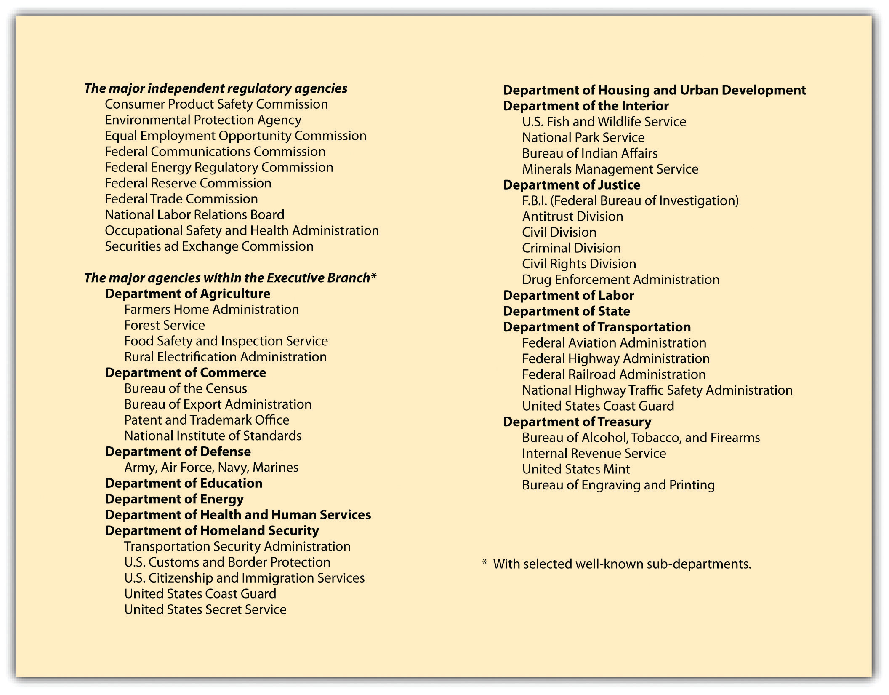

After reading this chapter, you should be able to do the following:
From the 1930s on, administrative agencies, law, and procedures have virtually remade our government and much of private life. Every day, business must deal with rules and decisions of state and federal administrative agencies. Informally, such rules are often called regulations, and they differ (only in their source) from laws passed by Congress and signed into law by the president. The rules created by agencies are voluminous: thousands of new regulations pour forth each year. The overarching question of whether there is too much regulation—or the wrong kind of regulation—of our economic activities is an important one but well beyond the scope of this chapter, in which we offer an overview of the purpose of administrative agencies, their structure, and their impact on business.
The US Constitution mentions only three branches of government: legislative, executive, and judicial (Articles I, II, and III). There is no mention of agencies in the Constitution, even though federal agencies are sometimes referred to as “the fourth branch of government.” The Supreme Court has recognized the legitimacy of federal administrative agenciesGovernmental units, either state or federal, that have specialized expertise and authority over some area of the economy. to make rules that have the same binding effect as statutes by Congress.
Most commentators note that having agencies with rule-making power is a practical necessity: (1) Congress does not have the expertise or continuity to develop specialized knowledge in various areas (e.g., communications, the environment, aviation). (2) Because of this, it makes sense for Congress to set forth broad statutory guidance to an agency and delegate authority to the agency to propose rules that further the statutory purposes. (3) As long as Congress makes this delegating guidance sufficiently clear, it is not delegating improperly. If Congress’s guidelines are too vague or undefined, it is (in essence) giving away its constitutional power to some other group, and this it cannot do.
The market often does not work properly, as economists often note. Monopolies, for example, happen in the natural course of human events but are not always desirable. To fix this, well-conceived and objectively enforced competition law (what is called antitrust law in the United States) is needed.
Negative externalities must be “fixed,” as well. For example, as we see in tort law (Chapter 7 "Introduction to Tort Law"), people and business organizations often do things that impose costs (damages) on others, and the legal system will try—through the award of compensatory damages—to make fair adjustments. In terms of the ideal conditions for a free market, think of tort law as the legal system’s attempt to compensate for negative externalities: those costs imposed on people who have not voluntarily consented to bear those costs.
In terms of freedoms to enter or leave the market, the US constitutional guarantees of equal protection can prevent local, state, and federal governments from imposing discriminatory rules for commerce that would keep minorities, women, and gay people from full participation in business. For example, if the small town of Xenophobia, Colorado, passed a law that required all business owners and their employees to be Christian, heterosexual, and married, the equal protection clause (as well as numerous state and federal equal opportunity employment laws) would empower plaintiffs to go to court and have the law struck down as unconstitutional.
Knowing that information is power, we will see many laws administered by regulatory agencies that seek to level the playing field of economic competition by requiring disclosure of the most pertinent information for consumers (consumer protection laws), investors (securities laws), and citizens (e.g., the toxics release inventory laws in environmental law).
In short, some forms of legislation and regulation are needed to counter a tendency toward consolidation of economic power and discriminatory attitudes toward certain individuals and groups (Chapter 30 "Employment Law") and to insist that people and companies clean up their own messes and not hide information that would empower voluntary choices in the free market.
But there are additional reasons to regulate. For example, in economic systems, it is likely for natural monopolies to occur. These are where one firm can most efficiently supply all of the good or service. Having duplicate (or triplicate) systems for supplying electricity, for example, would be inefficient, so most states have a public utilities commission to determine both price and quality of service. This is direct regulation.
Sometimes destructive competition can result if there is no regulation. Banking and insurance are good examples of this. Without government regulation of banks (setting standards and methods), open and fierce competition would result in widespread bank failures. That would erode public confidence in banks and business generally. The current situation (circa 2011) of six major banks that are “too big to fail” is, however, an example of destructive noncompetition.
Other market imperfections can yield a demand for regulation. For example, there is a need to regulate frequencies for public broadcast on radio, television, and other wireless transmissions (for police, fire, national defense, etc.). Many economists would also list an adequate supply of public goods as something that must be created by government. On its own, for example, the market would not provide public goods such as education, a highway system, lighthouses, a military for defense.
True laissez-faire capitalism—a market free from any regulation—would not try to deal with market imperfections and would also allow people to freely choose products, services, and other arrangements that historically have been deemed socially unacceptable. These would include making enforceable contracts for the sale and purchase of persons (slavery), sexual services, “street drugs” such as heroin or crack cocaine, votes for public office, grades for this course in business law, and even marriage partnership.
Thus the free market in actual terms—and not in theory—consists of commerce legally constrained by what is economically desirable and by what is socially desirable as well. Public policy objectives in the social arena include ensuring equal opportunity in employment, protecting employees from unhealthy or unsafe work environments, preserving environmental quality and resources, and protecting consumers from unsafe products. Sometimes these objectives are met by giving individuals statutory rights that can be used in bringing a complaint (e.g., Title VII of the Civil Rights Act of 1964, for employment discrimination), and sometimes they are met by creating agencies with the right to investigate and monitor and enforce statutory law and regulations created to enforce such law (e.g., the Environmental Protection Agency, for bringing a lawsuit against a polluting company).
Through the commerce clause in the US Constitution, Congress has the power to regulate trade between the states and with foreign nations. The earliest federal agency therefore dealt with trucking and railroads, to literally set the rules of the road for interstate commerce. The first federal agency, the Interstate Commerce Commission (ICC), was created in 1887. Congress delegated to the ICC the power to enforce federal laws against railroad rate discrimination and other unfair pricing practices. By the early part of this century, the ICC gained the power to fix rates. From the 1970s through 1995, however, Congress passed deregulatory measures, and the ICC was formally abolished in 1995, with its powers transferred to the Surface Transportation Board.
Beginning with the Federal Trade Commission (FTC) in 1914, Congress has created numerous other agencies, many of them familiar actors in American government. Today more than eighty-five federal agencies have jurisdiction to regulate some form of private activity. Most were created since 1930, and more than a third since 1960. A similar growth has occurred at the state level. Most states now have dozens of regulatory agencies, many of them overlapping in function with the federal bodies.
Independent agencies are different from federal executive departments and other executive agencies by their structural and functional characteristics. Most executive departments have a single director, administrator, or secretary appointed by the president of the United States. Independent agencies almost always have a commission or board consisting of five to seven members who share power over the agency. The president appoints the commissioners or board subject to Senate confirmation, but they often serve with staggered terms and often for longer terms than a usual four-year presidential term. They cannot be removed except for “good cause.” This means that most presidents will not get to appoint all the commissioners of a given independent agency. Most independent agencies have a statutory requirement of bipartisan membership on the commission, so the president cannot simply fill vacancies with members of his own political party.
In addition to the ICC and the FTC, the major independent agencies are the Federal Communications Commission (1934), Securities and Exchange Commission (1934), National Labor Relations Board (1935), and Environmental Protection Agency (1970). See Note 5.4 "Ideal Conditions for a Free Market" in the sidebar.
By contrast, members of executive branch agencies serve at the pleasure of the president and are therefore far more amenable to political control. One consequence of this distinction is that the rules that independent agencies promulgate may not be reviewed by the president or his staff—only Congress may directly overrule them—whereas the White House or officials in the various cabinet departments may oversee the work of the agencies contained within them (unless specifically denied the power by Congress).
Agencies have a variety of powers. Many of the original statutes that created them, like the Federal Communications Act, gave them licensing power. No party can enter into the productive activity covered by the act without prior license from the agency—for example, no utility can start up a nuclear power plant unless first approved by the Nuclear Regulatory Commission. In recent years, the move toward deregulation of the economy has led to diminution of some licensing power. Many agencies also have the authority to set the rates charged by companies subject to the agency’s jurisdiction. Finally, the agencies can regulate business practices. The FTC has general jurisdiction over all business in interstate commerce to monitor and root out “unfair acts” and “deceptive practices.” The Securities and Exchange Commission (SEC) oversees the issuance of corporate securities and other investments and monitors the practices of the stock exchanges.
Unlike courts, administrative agencies are charged with the responsibility of carrying out a specific assignment or reaching a goal or set of goals. They are not to remain neutral on the various issues of the day; they must act. They have been given legislative powers because in a society growing ever more complex, Congress does not know how to legislate with the kind of detail that is necessary, nor would it have the time to approach all the sectors of society even if it tried. Precisely because they are to do what general legislative bodies cannot do, agencies are specialized bodies. Through years of experience in dealing with similar problems they accumulate a body of knowledge that they can apply to accomplish their statutory duties.
All administrative agencies have two different sorts of personnel. The heads, whether a single administrator or a collegial body of commissioners, are political appointees and serve for relatively limited terms. Below them is a more or less permanent staff—the bureaucracy. Much policy making occurs at the staff level, because these employees are in essential control of gathering facts and presenting data and argument to the commissioners, who wield the ultimate power of the agencies.
Congress can establish an agency through legislation. When Congress gives powers to an agency, the legislation is known as an enabling actThe legislative act that establishes an agency’s authority in a particular area of the economy.. The concept that Congress can delegate power to an agency is known as the delegation doctrineAs a matter of constitutional law, the delegation doctrine declares that an agency can only exercise that power delegated to it by a constitutional authority.. Usually, the agency will have all three kinds of power: executive, legislative, and judicial. (That is, the agency can set the rules that business must comply with, can investigate and prosecute those businesses, and can hold administrative hearings for violations of those rules. They are, in effect, rule maker, prosecutor, and judge.) Because agencies have all three types of governmental powers, important constitutional questions were asked when Congress first created them. The most important question was whether Congress was giving away its legislative power. Was the separation of powers violated if agencies had power to make rules that were equivalent to legislative statutes?
In 1935, in Schechter Poultry Corp. v. United States, the Supreme Court overturned the National Industrial Recovery Act on the ground that the congressional delegation of power was too broad.Schechter Poultry Corp. v. United States, 295 US 495 (1935). Under the law, industry trade groups were granted the authority to devise a code of fair competition for the entire industry, and these codes became law if approved by the president. No administrative body was created to scrutinize the arguments for a particular code, to develop evidence, or to test one version of a code against another. Thus it was unconstitutional for the Congress to transfer all of its legislative powers to an agency. In later decisions, it was made clear that Congress could delegate some of its legislative powers, but only if the delegation of authority was not overly broad.
Still, some congressional enabling acts are very broad, such as the enabling legislation for the Occupational Safety and Health Administration (OSHA), which is given the authority to make rules to provide for safe and healthful working conditions in US workplaces. Such a broad initiative power gives OSHA considerable discretion. But, as noted in Section 5.2 "Controlling Administrative Agencies", there are both executive and judicial controls over administrative agency activities, as well as ongoing control by Congress through funding and the continuing oversight of agencies, both in hearings and through subsequent statutory amendments.
Congress creates administrative agencies through enabling acts. In these acts, Congress must delegate authority by giving the agency some direction as to what it wants the agency to do. Agencies are usually given broad powers to investigate, set standards (promulgating regulations), and enforce those standards. Most agencies are executive branch agencies, but some are independent.
During the course of the past seventy years, a substantial debate has been conducted, often in shrill terms, about the legitimacy of administrative lawmaking. One criticism is that agencies are “captured” by the industry they are directed to regulate. Another is that they overregulate, stifling individual initiative and the ability to compete. During the 1960s and 1970s, a massive outpouring of federal law created many new agencies and greatly strengthened the hands of existing ones. In the late 1970s during the Carter administration, Congress began to deregulate American society, and deregulation increased under the Reagan administration. But the accounting frauds of WorldCom, Enron, and others led to the Sarbanes-Oxley Act of 2002, and the financial meltdown of 2008 has led to reregulation of the financial sector. It remains to be seen whether the Deepwater Horizon oil blowout of 2010 will lead to more environmental regulations or a rethinking on how to make agencies more effective regulators.
Administrative agencies are the focal point of controversy because they are policy-making bodies, incorporating facets of legislative, executive, and judicial power in a hybrid form that fits uneasily at best in the framework of American government (see Figure 5.1 "Major Administrative Agencies of the United States"). They are necessarily at the center of tugging and hauling by the legislature, the executive branch, and the judiciary, each of which has different means of exercising political control over them. In early 1990, for example, the Bush administration approved a Food and Drug Administration regulation that limited disease-prevention claims by food packagers, reversing a position by the Reagan administration in 1987 permitting such claims.
Figure 5.1 Major Administrative Agencies of the United States
Congress can always pass a law repealing a regulation that an agency promulgates. Because this is a time-consuming process that runs counter to the reason for creating administrative bodies, it happens rarely. Another approach to controlling agencies is to reduce or threaten to reduce their appropriations. By retaining ultimate control of the purse strings, Congress can exercise considerable informal control over regulatory policy.
The president (or a governor, for state agencies) can exercise considerable control over agencies that are part of his cabinet departments and that are not statutorily defined as independent. Federal agencies, moreover, are subject to the fiscal scrutiny of the Office of Management and Budget (OMB), subject to the direct control of the president. Agencies are not permitted to go directly to Congress for increases in budget; these requests must be submitted through the OMB, giving the president indirect leverage over the continuation of administrators’ programs and policies.
Administrative agencies are creatures of law and like everyone else must obey the law. The courts have jurisdiction to hear claims that the agencies have overstepped their legal authority or have acted in some unlawful manner.
Courts are unlikely to overturn administrative actions, believing in general that the agencies are better situated to judge their own jurisdiction and are experts in rulemaking for those matters delegated to them by Congress. Some agency activities are not reviewable, for a number of reasons. However, after a business (or some other interested party) has exhausted all administrative remedies, it may seek judicial review of a final agency decision. The reviewing court is often asked to strike down or modify agency actions on several possible bases (see Section 5.5.2 "Strategies for Obtaining Judicial Review" on “Strategies for Obtaining Judicial Review”).
Administrative agencies are given unusual powers: to legislate, investigate, and adjudicate. But these powers are limited by executive and legislative controls and by judicial review.
In 1946, Congress enacted the Administrative Procedure Act (APA)The federal act that governs all agency procedures in both hearings and rulemaking.. This fundamental statute detailed for all federal administrative agencies how they must function when they are deciding cases or issuing regulations, the two basic tasks of administration. At the state level, the Model State Administrative Procedure Act, issued in 1946 and revised in 1961, has been adopted in twenty-eight states and the District of Columbia; three states have adopted the 1981 revision. The other states have statutes that resemble the model state act to some degree.
Deciding cases is a major task of many agencies. For example, the Federal Trade Commission (FTC) is empowered to charge a company with having violated the Federal Trade Commission Act. Perhaps a seller is accused of making deceptive claims in its advertising. Proceeding in a manner similar to a court, staff counsel will prepare a case against the company, which can defend itself through its lawyers. The case is tried before an administrative law judgeThe primary hearing officer in an administrative agency, who provides the initial ruling of the agency (often called an order) in any contested proceeding. (ALJ), formerly known as an administrative hearing examiner. The change in nomenclature was made in 1972 to enhance the prestige of ALJs and more accurately reflect their duties. Although not appointed for life as federal judges are, the ALJ must be free of assignments inconsistent with the judicial function and is not subject to supervision by anyone in the agency who carries on an investigative or prosecutorial function.
The accused parties are entitled to receive notice of the issues to be raised, to present evidence, to argue, to cross-examine, and to appear with their lawyers. Ex parte (eks PAR-tay) communications—contacts between the ALJ and outsiders or one party when both parties are not present—are prohibited. However, the usual burden-of-proof standard followed in a civil proceeding in court does not apply: the ALJ is not bound to decide in favor of that party producing the more persuasive evidence. The rule in most administrative proceedings is “substantial evidence,” evidence that is not flimsy or weak, but is not necessarily overwhelming evidence, either. The ALJ in most cases will write an opinion. That opinion is not the decision of the agency, which can be made only by the commissioners or agency head. In effect, the ALJ’s opinion is appealed to the commission itself.
Certain types of agency actions that have a direct impact on individuals need not be filtered through a full-scale hearing. Safety and quality inspections (grading of food, inspection of airplanes) can be made on the spot by skilled inspectors. Certain licenses can be administered through tests without a hearing (a test for a driver’s license), and some decisions can be made by election of those affected (labor union elections).
Trial-type hearings generally impose on particular parties liabilities based on past or present facts. Because these cases will serve as precedents, they are a partial guide to future conduct by others. But they do not directly apply to nonparties, who may argue in a subsequent case that their conduct does not fit within the holding announced in the case. Agencies can affect future conduct far more directly by announcing rules that apply to all who come within the agency’s jurisdiction.
The acts creating most of the major federal agencies expressly grant them authority to engage in rulemaking. This means, in essence, authority to legislate. The outpouring of federal regulations has been immense. The APA directs agencies about to engage in rulemaking to give notice in the Federal RegisterThe Federal Register is where all proposed administrative regulations are first published, usually inviting comment from interested parties. of their intent to do so. The Federal Register is published daily, Monday through Friday, in Washington, DC, and contains notice of various actions, including announcements of proposed rulemaking and regulations as adopted. The notice must specify the time, place, and nature of the rulemaking and offer a description of the proposed rule or the issues involved. Any interested person or organization is entitled to participate by submitting written “data, views or arguments.” Agencies are not legally required to air debate over proposed rules, though they often do so.
The procedure just described is known as “informal” rulemaking. A different procedure is required for “formal” rulemaking, defined as those instances in which the enabling legislation directs an agency to make rules “on the record after opportunity for an agency hearing.” When engaging in formal rulemaking, agencies must hold an adversary hearing.
Administrative regulations are not legally binding unless they are published. Agencies must publish in the Federal Register the text of final regulations, which ordinarily do not become effective until thirty days later. Every year the annual output of regulations is collected and reprinted in the Code of Federal Regulations (CFR)A compilation of all final agency rules. The CFR has the same legal effect as a bill passed by Congress and signed into law by the president., a multivolume paperback series containing all federal rules and regulations keyed to the fifty titles of the US Code (the compilation of all federal statutes enacted by Congress and grouped according to subject).
Agencies make rules that have the same effect as laws passed by Congress and the president. But such rules (regulations) must allow for full participation by interested parties. The Administrative Procedure Act (APA) governs both rulemaking and the agency enforcement of regulations, and it provides a process for fair hearings.
The administrative process is not frictionless. The interplay between government agency and private enterprise can burden business operations in a number of ways. Several of these are noted in this section.
Deciding whether and how to act are not decisions that government agencies reach out of the blue. They rely heavily on information garnered from business itself. Dozens of federal agencies require corporations to keep hundreds of types of records and to file numerous periodic reports. The Commission on Federal Paperwork, established during the Ford administration to consider ways of reducing the paperwork burden, estimated in its final report in 1977 that the total annual cost of federal paperwork amounted to $50 billion and that the 10,000 largest business enterprises spent $10 billion annually on paperwork alone. The paperwork involved in licensing a single nuclear power plant, the commission said, costs upward of $15 million.
Not surprisingly, therefore, businesses have sought ways of avoiding requests for data. Since the 1940s, the Federal Trade Commission (FTC) has collected economic data on corporate performance from individual companies for statistical purposes. As long as each company engages in a single line of business, data are comparable. When the era of conglomerates began in the 1970s, with widely divergent types of businesses brought together under the roof of a single corporate parent, the data became useless for purposes of examining the competitive behavior of different industries. So the FTC ordered dozens of large companies to break out their economic information according to each line of business that they carried on. The companies resisted, but the US Court of Appeals for the District of Columbia Circuit, where much of the litigation over federal administrative action is decided, directed the companies to comply with the commission’s order, holding that the Federal Trade Commission Act clearly permits the agency to collect information for investigatory purposes.In re FTC Line of Business Report Litigation, 595 F.2d 685 (D.C. Cir. 1978).
In 1980, responding to cries that businesses, individuals, and state and local governments were being swamped by federal demands for paperwork, Congress enacted the Paperwork Reduction Act. It gives power to the federal Office of Management and Budget (OMB) to develop uniform policies for coordinating the gathering, storage, and transmission of all the millions of reports flowing in each year to the scores of federal departments and agencies requesting information. These reports include tax and Medicare forms, financial loan and job applications, questionnaires of all sorts, compliance reports, and tax and business records. The OMB was given the power also to determine whether new kinds of information are needed. In effect, any agency that wants to collect new information from outside must obtain the OMB’s approval.
No one likes surprise inspections. A section of the Occupational Safety and Health Act of 1970 empowers agents of the Occupational Safety and Health Administration (OSHA) to search work areas for safety hazards and for violations of OSHA regulations. The act does not specify whether inspectors are required to obtain search warrants, required under the Fourth Amendment in criminal cases. For many years, the government insisted that surprise inspections are not unreasonable and that the time required to obtain a warrant would defeat the surprise element. The Supreme Court finally ruled squarely on the issue in 1978. In Marshall v. Barlow’s, Inc., the court held that no less than private individuals, businesses are entitled to refuse police demands to search the premises unless a court has issued a search warrant.Marshall v. Barlow’s, Inc., 436 US 307 (1978).
But where a certain type of business is closely regulated, surprise inspections are the norm, and no warrant is required. For example, businesses with liquor licenses that might sell to minors are subject to both overt and covert inspections (e.g., an undercover officer may “search” a liquor store by sending an underage patron to the store). Or a junkyard that specializes in automobiles and automobile parts may also be subject to surprise inspections, on the rationale that junkyards are highly likely to be active in the resale of stolen autos or stolen auto parts.New York v. Burger, 482 US 691 (1987).
It is also possible for inspections to take place without a search warrant and without the permission of the business. For example, the Environmental Protection Agency (EPA) wished to inspect parts of the Dow Chemical facility in Midland, Michigan, without the benefit of warrant. When they were refused, agents of the EPA obtained a fairly advanced aerial mapping camera and rented an airplane to fly over the Dow facility. Dow went to court for a restraining order against the EPA and a request to have the EPA turn over all photographs taken. But the Supreme Court ruled that the areas photographed were “open fields” and not subject to the protections of the Fourth Amendment.Dow Chemical Co. v. United States Environmental Protection Agency, 476 US 227 (1986).
In 1966, Congress enacted the Freedom of Information Act (FOIA), opening up to the citizenry many of the files of the government. (The act was amended in 1974 and again in 1976 to overcome a tendency of many agencies to stall or refuse access to their files.) Under the FOIA, any person has a legally enforceable right of access to all government documents, with nine specific exceptions, such as classified military intelligence, medical files, and trade secrets and commercial or financial information if “obtained from a person and privileged or confidential.” Without the trade-secret and financial-information exemptions, business competitors could, merely by requesting it, obtain highly sensitive competitive information sitting in government files.
A federal agency is required under the FOIA to respond to a document request within ten days. But in practice, months or even years may pass before the government actually responds to an FOIA request. Requesters must also pay the cost of locating and copying the records. Moreover, not all documents are available for public inspection. Along with the trade-secret and financial-information exemptions, the FOIA specifically exempts the following:
Note that the government may provide such information but is not required to provide such information; it retains discretion to provide information or not.
Regulated companies are often required to submit confidential information to the government. For these companies, submitting such information presents a danger under the FOIA of disclosure to competitors. To protect information from disclosure, the company is well advised to mark each document as privileged and confidential so that government officials reviewing it for a FOIA request will not automatically disclose it. Most agencies notify a company whose data they are about to disclose. But these practices are not legally required under the FOIA.
Government agencies, in order to do their jobs, collect a great deal of information from businesses. This can range from routine paperwork (often burdensome) to inspections, those with warrants and those without. Surprise inspections are allowed for closely regulated industries but are subject to Fourth Amendment requirements in general. Some information collected by agencies can be accessed using the Freedom of Information Act.
Neither an administrative agency’s adjudication nor its issuance of a regulation is necessarily final. Most federal agency decisions are appealable to the federal circuit courts. To get to court, the appellant must overcome numerous complex hurdles. He or she must have standing—that is, be in some sense directly affected by the decision or regulation. The case must be ripe for review; administrative remedies such as further appeal within the agency must have been exhausted.
Before you can complain to court about an agency’s action, you must first try to get the agency to reconsider its action. Generally, you must have asked for a hearing at the hearing examiner level, there must have been a decision reached that was unfavorable to you, and you must have appealed the decision to the full board. The full board must rule against you, and only then will you be heard by a court. The broadest exception to this exhaustion of administrative remediesA requirement that anyone wishing to appeal an agency action must wait until the agency has taken final action. requirement is if the agency had no authority to issue the rule or regulation in the first place, if exhaustion of remedies would be impractical or futile, or if great harm would happen should the rule or regulation continue to apply. Also, if the agency is not acting in good faith, the courts will hear an appeal without exhaustion.
Once these obstacles are cleared, the court may look at one of a series of claims. The appellant might assert that the agency’s action was ultra vires (UL-truh VI-reez)—beyond the scope of its authority as set down in the statute. This attack is rarely successful. A somewhat more successful claim is that the agency did not abide by its own procedures or those imposed upon it by the Administrative Procedure Act.
In formal rulemaking, the appellant also might insist that the agency lacked substantial evidence for the determination that it made. If there is virtually no evidence to support the agency’s findings, the court may reverse. But findings of fact are not often overturned by the courts.
Likewise, there has long been a presumption that when an agency issues a regulation, it has the authority to do so: those opposing the regulation must bear a heavy burden in court to upset it. This is not a surprising rule, for otherwise courts, not administrators, would be the authors of regulations. Nevertheless, regulations cannot exceed the scope of the authority conferred by Congress on the agency. In an important 1981 case before the Supreme Court, the issue was whether the secretary of labor, acting through the Occupational Health and Safety Administration (OSHA), could lawfully issue a standard limiting exposure to cotton dust in the workplace without first undertaking a cost-benefit analysis. A dozen cotton textile manufacturers and the American Textile Manufacturers Institute, representing 175 companies, asserted that the cotton dust standard was unlawful because it did not rationally relate the benefits to be derived from the standard to the costs that the standard would impose. See Section 5.6 "Cases", American Textile Manufacturers Institute v. Donovan.
In summary, then, an individual or a company may (after exhaustion of administrative remedies) challenge agency action where such action is the following:
Section 706 of the Administrative Procedure Act sets out those standards. While it is difficult to show that an agency’s action is arbitrary and capricious, there are cases that have so held. For example, after the Reagan administration set aside a Carter administration rule from the National Highway Traffic and Safety Administration on passive restraints in automobiles, State Farm and other insurance companies challenged the reversal as arbitrary and capricious. Examining the record, the Supreme Court found that the agency had failed to state enough reasons for its reversal and required the agency to review the record and the rule and provide adequate reasons for its reversal. State Farm and other insurance companies thus gained a legal benefit by keeping an agency rule that placed costs on automakers for increased passenger safety and potentially reducing the number of injury claims from those it had insured.Motor Vehicle Manufacturers’ Assn. v. State Farm Mutual Ins., 463 US 29 (1983).
In the modern administrative state, the range of government activity is immense, and administrative agencies frequently get in the way of business enterprise. Often, bureaucratic involvement is wholly legitimate, compelled by law; sometimes, however, agencies or government officials may overstep their bounds, in a fit of zeal or spite. What recourse does the private individual or company have?
Mainly for historical reasons, it has always been more difficult to sue the government than to sue private individuals or corporations. For one thing, the government has long had recourse to the doctrine of sovereign immunity as a shield against lawsuits. Yet in 1976, Congress amended the Administrative Procedure Act to waive any federal claim to sovereign immunity in cases of injunctive or other nonmonetary relief. Earlier, in 1946, in the Federal Tort Claims Act, Congress had waived sovereign immunity of the federal government for most tort claims for money damages, although the act contains several exceptions for specific agencies (e.g., one cannot sue for injuries resulting from fiscal operations of the Treasury Department or for injuries stemming from activities of the military in wartime). The act also contains a major exception for claims “based upon [an official’s] exercise or performance or the failure to exercise or perform a discretionary function or duty.” This exception prevents suits against parole boards for paroling dangerous criminals who then kill or maim in the course of another crime and suits against officials whose decision to ship explosive materials by public carrier leads to mass deaths and injuries following an explosion en route.Dalehite v. United States, 346 US 15 (1953).
In recent years, the Supreme Court has been stripping away the traditional immunity enjoyed by many government officials against personal suits. Some government employees—judges, prosecutors, legislators, and the president, for example—have absolute immunity against suit for official actions. But many public administrators and government employees have at best a qualified immunity. Under a provision of the Civil Rights Act of 1871 (so-called Section 1983 actions), state officials can be sued in federal court for money damages whenever “under color of any state law” they deprive anyone of his rights under the Constitution or federal law. In Bivens v. Six Unknown Federal Narcotics Agents, the Supreme Court held that federal agents may be sued for violating the plaintiff’s Fourth Amendment rights against an unlawful search of his home.Bivens v. Six Unknown Federal Narcotics Agents, 403 US 388 (1971). Subsequent cases have followed this logic to permit suits for violations of other constitutional provisions. This area of the law is in a state of flux, and it is likely to continue to evolve.
Sometimes damage is done to an individual or business because the government has given out erroneous information. For example, suppose that Charles, a bewildered, disabled navy employee, is receiving a federal disability annuity. Under the regulations, he would lose his pension if he took a job that paid him in each of two succeeding years more than 80 percent of what he earned in his old navy job. A few years later, Congress changed the law, making him ineligible if he earned more than 80 percent in anyone year. For many years, Charles earned considerably less than the ceiling amount. But then one year he got the opportunity to make some extra money. Not wishing to lose his pension, he called an employee relations specialist in the US Navy and asked how much he could earn and still keep his pension. The specialist gave him erroneous information over the telephone and then sent him an out-of-date form that said Charles could safely take on the extra work. Unfortunately, as it turned out, Charles did exceed the salary limit, and so the government cut off his pension during the time he earned too much. Charles sues to recover his lost pension. He argues that he relied to his detriment on false information supplied by the navy and that in fairness the government should be estopped from denying his claim.
Unfortunately for Charles, he will lose his case. In Office of Personnel Management v. Richmond, the Supreme Court reasoned that it would be unconstitutional to permit recovery.Office of Personnel Management v. Richmond, 110 S. Ct. 2465 (1990). The appropriations clause of Article I says that federal money can be paid out only through an appropriation made by law. The law prevented this particular payment to be made. If the court were to make an exception, it would permit executive officials in effect to make binding payments, even though unauthorized, simply by misrepresenting the facts. The harsh reality, therefore, is that mistakes of the government are generally held against the individual, not the government, unless the law specifically provides for recompense (as, for example, in the Federal Tort Claims Act just discussed).
After exhausting administrative remedies, there are numerous grounds for seeking judicial review of an agency’s order or of a final rule. While courts defer to agencies to some degree, an agency must follow its own rules, comply with the Administrative Procedure Act, act within the scope of its delegated authority, avoid acting in an arbitrary manner, and make final rules that are supported by substantial evidence.
Marshall v. Barlow’s, Inc.
436 U.S. 307 (U.S. Supreme Court 1978)
MR. JUSTICE WHITE delivered the opinion of the Court.
Section 8(a) of the Occupational Safety and Health Act of 1970 (OSHA or Act) empowers agents of the Secretary of Labor (Secretary) to search the work area of any employment facility within the Act’s jurisdiction. The purpose of the search is to inspect for safety hazards and violations of OSHA regulations. No search warrant or other process is expressly required under the Act.
On the morning of September 11, 1975, an OSHA inspector entered the customer service area of Barlow’s, Inc., an electrical and plumbing installation business located in Pocatello, Idaho. The president and general manager, Ferrol G. “Bill” Barlow, was on hand; and the OSHA inspector, after showing his credentials, informed Mr. Barlow that he wished to conduct a search of the working areas of the business. Mr. Barlow inquired whether any complaint had been received about his company. The inspector answered no, but that Barlow’s, Inc., had simply turned up in the agency’s selection process. The inspector again asked to enter the nonpublic area of the business; Mr. Barlow’s response was to inquire whether the inspector had a search warrant.
The inspector had none. Thereupon, Mr. Barlow refused the inspector admission to the employee area of his business. He said he was relying on his rights as guaranteed by the Fourth Amendment of the United States Constitution.
Three months later, the Secretary petitioned the United States District Court for the District of Idaho to issue an order compelling Mr. Barlow to admit the inspector. The requested order was issued on December 30, 1975, and was presented to Mr. Barlow on January 5, 1976. Mr. Barlow again refused admission, and he sought his own injunctive relief against the warrantless searches assertedly permitted by OSHA.…The Warrant Clause of the Fourth Amendment protects commercial buildings as well as private homes. To hold otherwise would belie the origin of that Amendment, and the American colonial experience.
An important forerunner of the first 10 Amendments to the United States Constitution, the Virginia Bill of Rights, specifically opposed “general warrants, whereby an officer or messenger may be commanded to search suspected places without evidence of a fact committed.” The general warrant was a recurring point of contention in the Colonies immediately preceding the Revolution. The particular offensiveness it engendered was acutely felt by the merchants and businessmen whose premises and products were inspected for compliance with the several parliamentary revenue measures that most irritated the colonists.…
* * *
This Court has already held that warrantless searches are generally unreasonable, and that this rule applies to commercial premises as well as homes. In Camara v. Municipal Court, we held:
[E]xcept in certain carefully defined classes of cases, a search of private property without proper consent is ‘unreasonable’ unless it has been authorized by a valid search warrant.
On the same day, we also ruled: As we explained in Camara, a search of private houses is presumptively unreasonable if conducted without a warrant. The businessman, like the occupant of a residence, has a constitutional right to go about his business free from unreasonable official entries upon his private commercial property. The businessman, too, has that right placed in jeopardy if the decision to enter and inspect for violation of regulatory laws can be made and enforced by the inspector in the field without official authority evidenced by a warrant. These same cases also held that the Fourth Amendment prohibition against unreasonable searches protects against warrantless intrusions during civil as well as criminal investigations. The reason is found in the “basic purpose of this Amendment…[which] is to safeguard the privacy and security of individuals against arbitrary invasions by governmental officials.” If the government intrudes on a person’s property, the privacy interest suffers whether the government’s motivation is to investigate violations of criminal laws or breaches of other statutory or regulatory standards.…
[A]n exception from the search warrant requirement has been recognized for “pervasively regulated business[es],” United States v. Biswell, 406 U.S. 311, 316 (1972), and for “closely regulated” industries “long subject to close supervision and inspection,” Colonnade Catering Corp. v. United States, 397 U.S. 72, 74, 77 (1970). These cases are indeed exceptions, but they represent responses to relatively unique circumstances. Certain industries have such a history of government oversight that no reasonable expectation of privacy could exist for a proprietor over the stock of such an enterprise. Liquor (Colonnade) and firearms (Biswell) are industries of this type when an entrepreneur embarks upon such a business, he has voluntarily chosen to subject himself to a full arsenal of governmental regulation.
* * *
The clear import of our cases is that the closely regulated industry of the type involved in Colonnade and Biswell is the exception. The Secretary would make it the rule. Invoking the Walsh-Healey Act of 1936, 41 U.S.C. § 35 et seq., the Secretary attempts to support a conclusion that all businesses involved in interstate commerce have long been subjected to close supervision of employee safety and health conditions. But…it is quite unconvincing to argue that the imposition of minimum wages and maximum hours on employers who contracted with the Government under the Walsh-Healey Act prepared the entirety of American interstate commerce for regulation of working conditions to the minutest detail. Nor can any but the most fictional sense of voluntary consent to later searches be found in the single fact that one conducts a business affecting interstate commerce. Under current practice and law, few businesses can be conducted without having some effect on interstate commerce.
* * *
The critical fact in this case is that entry over Mr. Barlow’s objection is being sought by a Government agent. Employees are not being prohibited from reporting OSHA violations. What they observe in their daily functions is undoubtedly beyond the employer’s reasonable expectation of privacy. The Government inspector, however, is not an employee. Without a warrant he stands in no better position than a member of the public. What is observable by the public is observable, without a warrant, by the Government inspector as well. The owner of a business has not, by the necessary utilization of employees in his operation, thrown open the areas where employees alone are permitted to the warrantless scrutiny of Government agents. That an employee is free to report, and the Government is free to use, any evidence of noncompliance with OSHA that the employee observes furnishes no justification for federal agents to enter a place of business from which the public is restricted and to conduct their own warrantless search.
* * *
[The District Court judgment is affirmed.]
American Textile Manufacturers Institute v. Donovan
452 U.S. 490 (1981)
JUSTICE BRENNAN delivered the opinion of the Court.
Congress enacted the Occupational Safety and Health Act of 1970 (Act) “to assure so far as possible every working man and woman in the Nation safe and healthful working conditions.…“The Act authorizes the Secretary of Labor to establish, after notice and opportunity to comment, mandatory nationwide standards governing health and safety in the workplace. In 1978, the Secretary, acting through the Occupational Safety and Health Administration (OSHA), promulgated a standard limiting occupational exposure to cotton dust, an airborne particle byproduct of the preparation and manufacture of cotton products, exposure to which produces a “constellation of respiratory effects” known as “byssinosis.” This disease was one of the expressly recognized health hazards that led to passage of the Act.
Petitioners in these consolidated cases representing the interests of the cotton industry, challenged the validity of the “Cotton Dust Standard” in the Court of Appeals for the District of Columbia Circuit pursuant to § 6 (f) of the Act, 29 U.S.C. § 655 (f). They contend in this Court, as they did below, that the Act requires OSHA to demonstrate that its Standard reflects a reasonable relationship between the costs and benefits associated with the Standard. Respondents, the Secretary of Labor and two labor organizations, counter that Congress balanced the costs and benefits in the Act itself, and that the Act should therefore be construed not to require OSHA to do so. They interpret the Act as mandating that OSHA enact the most protective standard possible to eliminate a significant risk of material health impairment, subject to the constraints of economic and technological feasibility.
The Court of Appeals held that the Act did not require OSHA to compare costs and benefits.
We granted certiorari, 449 U.S. 817 (1980), to resolve this important question, which was presented but not decided in last Term’s Industrial Union Dept. v. American Petroleum Institute, 448 U.S. 607 (1980), and to decide other issues related to the Cotton Dust Standard.
* * *
Not until the early 1960’s was byssinosis recognized in the United States as a distinct occupational hazard associated with cotton mills. In 1966, the American Conference of Governmental Industrial Hygienists (ACGIH), a private organization, recommended that exposure to total cotton dust be limited to a “threshold limit value” of 1,000 micrograms per cubic meter of air (1,000 g/m3.) averaged over an 8-hour workday. See 43 Fed. Reg. 27351, col. 1 (1978). The United States Government first regulated exposure to cotton dust in 1968, when the Secretary of Labor, pursuant to the Walsh-Healey Act, 41 U.S.C. 35 (e), promulgated airborne contaminant threshold limit values, applicable to public contractors, that included the 1,000 g/m3 limit for total cotton dust. 34 Fed. Reg. 7953 (1969). Following passage of the Act in 1970, the 1,000 g/m3. standard was adopted as an “established Federal standard” under 6 (a) of the Act, 84 Stat. 1593, 29 U.S.C. 655 (a), a provision designed to guarantee immediate protection of workers for the period between enactment of the statute and promulgation of permanent standards.
That same year, the Director of the National Institute for Occupational Safety and Health (NIOSH), pursuant to the Act, 29 U.S.C. §§ 669(a)(3), 671 (d)(2), submitted to the Secretary of Labor a recommendation for a cotton dust standard with a permissible exposure limit (PEL) that “should be set at the lowest level feasible, but in no case at an environmental concentration as high as 0.2 mg lint-free cotton dust/cu m,” or 200 g/m3. of lint-free respirable dust. Several months later, OSHA published an Advance Notice of Proposed Rulemaking, 39 Fed.Reg. 44769 (1974), requesting comments from interested parties on the NIOSH recommendation and other related matters. Soon thereafter, the Textile Worker’s Union of America, joined by the North Carolina Public Interest Research Group, petitioned the Secretary, urging a more stringent PEL of 100 g/m3.
On December 28, 1976, OSHA published a proposal to replace the existing federal standard on cotton dust with a new permanent standard, pursuant to § 6(b)(5) of the Act, 29 U.S.C. § 655(b)(5). 41 Fed.Reg. 56498. The proposed standard contained a PEL of 200 g/m3 of vertical elutriated lint-free respirable cotton dust for all segments of the cotton industry. Ibid. It also suggested an implementation strategy for achieving the PEL that relied on respirators for the short term and engineering controls for the long-term. OSHA invited interested parties to submit written comments within a 90-day period.
* * *
The starting point of our analysis is the language of the statute itself. Section 6(b)(5) of the Act, 29 U.S.C. § 655(b)(5) (emphasis added), provides:
The Secretary, in promulgating standards dealing with toxic materials or harmful physical agents under this subsection, shall set the standard which most adequately assures, to the extent feasible, on the basis of the best available evidence, that no employee will suffer material impairment of health or functional capacity even if such employee has regular exposure to the hazard dealt with by such standard for the period of his working life. Although their interpretations differ, all parties agree that the phrase “to the extent feasible” contains the critical language in § 6(b)(5) for purposes of these cases.
The plain meaning of the word “feasible” supports respondents’ interpretation of the statute. According to Webster’s Third New International Dictionary of the English Language 831 (1976), “feasible” means “capable of being done, executed, or effected.” In accord, the Oxford English Dictionary 116 (1933) (“Capable of being done, accomplished or carried out”); Funk & Wagnalls New “Standard” Dictionary of the English Language 903 (1957) (“That may be done, performed or effected”). Thus, § 6(b)(5) directs the Secretary to issue the standard that “most adequately assures…that no employee will suffer material impairment of health,” limited only by the extent to which this is “capable of being done.” In effect then, as the Court of Appeals held, Congress itself defined the basic relationship between costs and benefits, by placing the “benefit” of worker health above all other considerations save those making attainment of this “benefit” unachievable. Any standard based on a balancing of costs and benefits by the Secretary that strikes a different balance than that struck by Congress would be inconsistent with the command set forth in § 6(b)(5). Thus, cost-benefit analysis by OSHA is not required by the statute because feasibility analysis is.
When Congress has intended that an agency engage in cost-benefit analysis, it has clearly indicated such intent on the face of the statute. One early example is the Flood Control Act of 1936, 33 U.S.C. § 701:
[T]he Federal Government should improve or participate in the improvement of navigable waters or their tributaries, including watersheds thereof, for flood control purposes if the benefits to whomsoever they may accrue are in excess of the estimated costs, and if the lives and social security of people are otherwise adversely affected. (emphasis added)
A more recent example is the Outer Continental Shelf Lands Act Amendments of 1978, providing that offshore drilling operations shall use the best available and safest technologies which the Secretary determines to be economically feasible, wherever failure of equipment would have a significant effect on safety, health, or the environment, except where the Secretary determines that the incremental benefits are clearly insufficient to justify the incremental costs of using such technologies.
These and other statutes demonstrate that Congress uses specific language when intending that an agency engage in cost-benefit analysis. Certainly in light of its ordinary meaning, the word “feasible” cannot be construed to articulate such congressional intent. We therefore reject the argument that Congress required cost-benefit analysis in § 6(b)(5).
Administrative rules and regulations constitute the largest body of laws that directly affect business. These regulations are issued by dozens of federal and state agencies that regulate virtually every aspect of modern business life, including the natural environment, corporate finance, transportation, telecommunications, energy, labor relations, and trade practices. The administrative agencies derive their power to promulgate regulations from statutes passed by Congress or state legislatures.
The agencies have a variety of powers. They can license companies to carry on certain activities or prohibit them from doing so, lay down codes of conduct, set rates that companies may charge for their services, and supervise various aspects of business.
Most federal administrative agencies are created by
The Federal Trade Commission, like most administrative agencies of the federal government, is part of
In the Clean Water Act, Congress sets broad guidelines, but it is the Environmental Protection Agency that proposes rules to regulate industrial discharges. Where do proposed rules originally appear?
The legal basis for all administrative law, including regulations of the Federal Trade Commission, is found in
The Federal Trade Commission, like other administrative agencies, has the power to